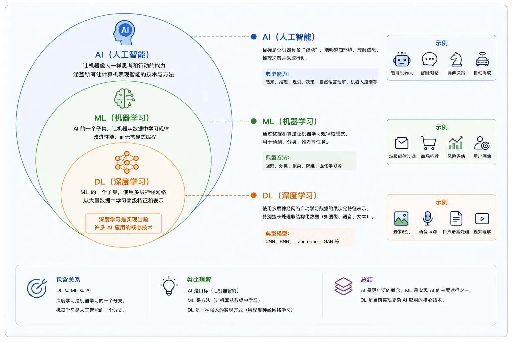

Introducción a la IA
Imagina esta escena:
Por la mañana abres tu teléfono y el álbum automáticamente clasifica las fotos de anoche por personas y escenas.
-
De camino al trabajo le dices algo al teléfono y el navegador te planifica una ruta que evita el tráfico.
-
Al llegar a tu escritorio, escribes una línea en el cuadro de diálogo y la IA te genera el borrador completo del informe semanal.
Estas escenas parecían ciencia ficción hace cinco años, pero ahora son parte de la vida cotidiana. La IA no es el futuro; ya está integrada en los productos que usas a diario.
La aparición de ChatGPT a finales de 2022 fue un punto de inflexión:
Antes de esto, la IA era asunto de programadores e investigadores.
-
Después de esto, la IA se convirtió en una herramienta que cualquiera puede usar directamente.
Definición de inteligencia artificial
En palabras sencillas:La inteligencia artificial (Artificial Intelligence, abreviada IA) es la tecnología que permite a las computadoras tener comportamientos inteligentes similares a los humanos.。
Los comportamientos inteligentes mencionados incluyen: comprender texto, escuchar y entender voz, reconocer imágenes, tomar decisiones y aprender de la experiencia.
La abreviatura inglesa AI se leeA-I(las dos letras se leen por separado), el nombre completo es...Artificial Intelligence。
Qué puede hacer la IA
Las siguientes capacidades ya están bastante maduras en la IA actual:
| Capacidad | Aplicaciones típicas | ¿Lo has usado? |
|---|---|---|
| Comprensión y generación de lenguaje | Traducción, escritura, resumen de artículos, respuesta a preguntas | ChatGPT、Claude |
| Reconocimiento de imágenes | Desbloqueo facial, escaneo de documentos, análisis de imágenes médicas | Clasificación de álbumes de fotos en el móvil, tornos de estación |
| Interacción por voz | Conversión de voz a texto, asistentes de voz | Siri, Xiao Ai Tong Xue, voz del método de entrada |
| Generación de contenido | Pintura con IA, generación de video, creación musical | Midjourney、Suno |
| Asistencia de código | Autocompletado de código, corrección de errores, generación automática de código | GitHub Copilot、Cursor |
Qué no puede hacer la IA
Conocer los límites de la IA es más importante que conocer sus capacidades.
La IA no entiende realmente nada: solo hace cálculos de probabilidad. Si dices "hace buen tiempo hoy", no sabe qué se siente al decir "bueno"; solo sabe qué palabras suelen seguir a esa frase.
La IA no tiene conciencia, ni emociones, ni objetivos propios; no desea hacer nada.
La IA puede tener alucinaciones, es decir, inventa con total seriedad hechos, nombres, artículos y datos que no existen, porque en esencia predice la siguiente palabra en lugar de verificar hechos.
La IA carece de criterio ante situaciones nuevas no vistas; si los datos de entrenamiento no contienen escenarios similares, su rendimiento puede ser muy deficiente.

Recuerda:La IA es un asistente potente, no una autoridad confiable.。
En decisiones de alto riesgo como medicina, derecho o inversión, la salida de la IA solo sirve como referencia, no como base final.
Breve historia del desarrollo de la IA
La IA no surgió de repente; su historia abarca más de 70 años y ha pasado por tres grandes ciclos de auge y caída.
Primera ola: simbolismo (1950s–1980s)
En 1956, un grupo de científicos se reunió en el Dartmouth College,inteligencia artificialy este término se propuso formalmente.
La idea dominante en ese entonces era simple: escribir el conocimiento de los expertos humanos como reglas individuales, almacenarlas en la computadora y, ante un problema, razonar según las reglas. Este enfoque se llamaba sistema experto.
Por ejemplo, un sistema experto de diagnóstico médico contenía miles de reglas: si el paciente tiene fiebre y tos, puede ser un resfriado; si la fiebre supera los 39 grados y dura tres días, se recomienda un análisis de sangre.
El problema es que las reglas del mundo real son interminables. Escribes cinco mil reglas, pero llega un paciente con la combinación de síntomas número seis mil y el sistema no sabe qué hacer.
Además, modificar reglas es extremadamente doloroso: añadir una nueva regla puede entrar en conflicto con cientos de reglas existentes.
A finales de la década de 1980, la gente se dio cuenta de que este camino no funcionaba, y la IA entró en su primer invierno.
Segunda ola: auge del aprendizaje automático (1990s–2010s)
Los investigadores cambiaron el enfoque:Ya no hacer que las personas escriban reglas, sino que la máquina encuentre patrones por sí misma a partir de los datos.。
Por ejemplo, para identificar correos basura, ya no se escribe una regla como "si contienepremioesa es una regla para spam, sino darle a la máquina diez mil correos etiquetados (cinco mil normales, cinco mil spam) y dejar que el algoritmo descubra por sí mismo cómo suele ser un correo basura.
En este período nacieron algoritmos clásicos como máquinas de vectores de soporte (SVM), bosques aleatorios y regresión logística, que funcionan muy bien en escenarios como filtrado de spam, detección de fraude con tarjetas de crédito y recomendación de productos.
Pero había un cuello de botella: las características debían ser diseñadas por humanos. Por ejemplo, para el reconocimiento de imágenes, primero tenías que extraer manualmente características como "bordes", "distribución de color" y "textura", y luego alimentar el algoritmo. La capacidad humana para extraer características determinaba el límite superior del modelo.
Tercera ola: aprendizaje profundo y grandes modelos (2010s–presente)
En 2012, una red neuronal profunda llamada AlexNet superó ampliamente a los métodos tradicionales en la competición de reconocimiento de imágenes ImageNet, marcando el inicio oficial de la era del aprendizaje profundo.
El avance central del aprendizaje profundo es:Ya ni siquiera es necesario diseñar características manualmente; el modelo aprende capa por capa directamente de los datos en bruto.。
En 2017, Google publicó el artículo "Attention Is All You Need", proponiendo la arquitectura Transformer.
En noviembre de 2022, OpenAI lanzó ChatGPT; en dos meses superó los cien millones de usuarios, y la IA realmente llegó al público general.
De 2023 hasta hoy, grandes modelos como GPT-4, Claude y Gemini siguen iterando, y surgen constantemente nuevas direcciones como la multimodalidad, los agentes de IA y los modelos de razonamiento.
El hilo central de las tres olas, resumido en una frase:
| Ola | Idea central | Quién hace el trabajo | Evento representativo |
|---|---|---|---|
| Primera (1950s–1980s) | Las personas escriben reglas, la máquina las ejecuta | Los programadores escriben reglas | 1956 Conferencia de Dartmouth |
| Segunda (1990s–2010s) | La máquina aprende patrones de los datos | Las personas diseñan características, el algoritmo aprende patrones | 1997: Deep Blue vence al campeón de ajedrez |
| Tercera (2010s–presente) | Redes profundas + datos masivos + gran potencia de cómputo | El modelo aprende incluso las características por sí mismo | 2022: Lanzamiento de ChatGPT |
La trayectoria de evolución de la IA: impulsada por reglas → impulsada por datos → aprendizaje profundo → grandes modelos → agentes inteligentes. Si se detalla más, podemos dividirla en 5 etapas:
- 1950s: la gente plantea una pregunta: ¿pueden las máquinas pensar como los humanos?
- 1960s–1980s: se intenta escribir conocimiento y reglas en las máquinas (simbolismo, sistemas expertos), con resultados limitados.
- 1990s–2000s: se deja de escribir reglas manualmente y se permite que las máquinas aprendan de los datos (aprendizaje automático).
- 2010s: el aprendizaje profundo surge; las redes neuronales logran avances gracias a datos masivos y potencia de cómputo.
- 2020s: llega la era de los grandes modelos; un solo modelo comienza a tener capacidades generales (charlar, escribir, programar, razonar).
- Futuro: la IA está pasando de responder preguntas a completar tareas de forma autónoma (Agentes, AGI).

Tres conceptos que se confunden fácilmente: IA, ML, DL
IA (Artificial Intelligence, inteligencia artificial), ML (Machine Learning, aprendizaje automático) y DL (Deep Learning, aprendizaje profundo) a menudo se mezclan en los medios, pero sus definiciones no son equivalentes; no son lo mismo.Primero veamos un diagrama de relaciones:

Relación de inclusión: IA ⊃ ML ⊃ DL
-
La inteligencia artificial (IA) es el círculo más grande; toda tecnología que utiliza máquinas para simular comportamiento inteligente cuenta como IA.
-
El aprendizaje automático (Machine Learning, ML) es un subconjunto de la IA, concretamente los métodos que aprenden automáticamente de los datos.
-
El aprendizaje profundo (Deep Learning, DL) es un subconjunto del ML, concretamente los métodos basados en redes neuronales multicapa.
No toda la IA es ML, ni todo el ML es DL.
Aclarar la diferencia entre los tres con un ejemplo
Supongamos que queremos hacer un programa que determine si un correo es spam; las tres ideas corresponden a tres niveles:
Ejemplo
# Idea 1: Método basado en reglas (IA, pero no ML)
# El programador escribe reglas a mano; no hay proceso de "aprendizaje"
# ============================================
def is_spam_by_rules(email_text: str) -> bool:
"""Usar reglas de palabras clave para detectar spam: reglas puramente manuales, sin aprendizaje"""
# Si se detecta cualquiera de las siguientes palabras clave, se clasifica como spam
spam_keywords = [
"Felicidades, has ganado",
"Reclama gratis",
"Haz clic para reclamar",
"Oferta por tiempo limitado",
"paquete de regalo runoob", # Para pruebas; en un escenario real se puede reemplazar
]
for keyword in spam_keywords:
if keyword in email_text:
return True
return False
# Prueba: el contenido de un correo es el siguiente
test_email = "¡Felicidades! Has recibido el paquete de regalo de runoob, ¡haz clic para reclamarlo!"
result = is_spam_by_rules(test_email)
print(f"Resultado del método de reglas: {'correo basura' if result else 'correo normal'}")
# Salida: Resultado del método de reglas: correo basura
El método de reglas tiene la ventaja de ser simple y directo, pero su desventaja es que las reglas son interminables e incompletas. Si el spam cambia de redacción, por ejemplo "Le felicitamos por su gran premio", la regla no lo detecta.
Ejemplo
# Idea 2: Aprendizaje automático clásico (ML, pero no DL)
# Aprende patrones automáticamente de datos históricos; no necesita reglas escritas a mano
# ============================================
def train_simple_classifier(emails: list, labels: list):
"""Entrenar un clasificador de aprendizaje automático muy simple
Idea: contar la frecuencia de cada palabra en correos spam y normales,
usar la diferencia de frecuencias para clasificar correos nuevos"""
# Contar el número de apariciones de cada palabra en los dos tipos de correos
spam_word_count = {} # Número total de apariciones de la palabra en correos spam
ham_word_count = {} # Número total de apariciones de la palabra en correos normales
spam_total = 0 # Número total de palabras en correos spam
ham_total = 0 # Número total de palabras en correos normales
for email_text, label in zip(emails, labels):
words = email_text.split()
for word in words:
if label == "spam":
spam_word_count[word] = spam_word_count.get(word, 0) + 1
spam_total += 1
else:
ham_word_count[word] = ham_word_count.get(word, 0) + 1
ham_total += 1
# Devolver la información estadística aprendida (esto es el "modelo")
return {
"spam_word_count": spam_word_count,
"ham_word_count": ham_word_count,
"spam_total": spam_total,
"ham_total": ham_total,
}
def predict(model: dict, email_text: str) -> str:
"""Usar el modelo aprendido para predecir correos nuevos"""
words = email_text.split()
spam_score = 0.0 # Puntuación de spam
ham_score = 0.0 # Puntuación de correo normal
for word in words:
# Calcular la probabilidad de que esta palabra aparezca en spam (con suavizado para evitar dividir por cero)
spam_prob = (model["spam_word_count"].get(word, 0) + 1) / (model["spam_total"] + 1)
ham_prob = (model["ham_word_count"].get(word, 0) + 1) / (model["ham_total"] + 1)
spam_score += spam_prob
ham_score += ham_prob
return "spam" if spam_score > ham_score else "ham"
# Datos de entrenamiento: 4 correos etiquetados
emails = [
"Felicidades has ganado reclama gratis paquete de regalo", # Spam
"Oferta por tiempo limitado haz clic para reclamar paquete de regalo runoob", # Spam
"Reunión mañana recuerda traer informe", # Normal
"Fin de semana juntos comer tienes tiempo", # Normal
]
labels = ["spam", "spam", "ham", "ham"]
model = train_simple_classifier(emails, labels)
# Predecir correo nuevo
new_email = "Felicidades has ganado un gran premio ven a reclamarlo"
result = predict(model, new_email)
print(f"Resultado del método ML: {'correo basura' if result == 'spam' else 'correo normal'}")
# Salida: Resultado del método ML: correo basura
El método ML ya no requiere reglas escritas a mano; aprende automáticamente de los datos.
Pero aún requiere que las personas diseñen "características"; en este ejemplo, la característica es "usar la frecuencia de palabras para clasificar". Si las características no están bien diseñadas, el rendimiento del modelo no mejora.
Ejemplo
# Idea 3: Aprendizaje profundo (DL, subconjunto del ML)
# Usa redes neuronales multicapa; incluso las características las aprende el propio modelo
# Aquí se usa pseudocódigo + comentarios para explicar el principio; no depende de ningún framework
# ============================================
# Idea del aprendizaje profundo para clasificación de spam:
# 1. Convertir cada palabra en un vector (una serie de números); este paso se llama "word embedding"
# 2. Enviar estos vectores a una red neuronal multicapa
# 3. Cada capa de la red extrae automáticamente características cada vez más abstractas
# 4. La última capa genera la probabilidad de "spam" o "normal"
# A continuación se muestra una estructura conceptual de red neuronal de tres capas:
class SimpleNeuralNetwork:
"""Demostración conceptual: estructura de una red neuronal de tres capas (sin lógica de entrenamiento)"""
def __init__(self, input_size: int, hidden_size: int, output_size: int):
"""Inicializar los pesos de cada capa de la red"""
import random
# Capa 1: entrada → capa oculta (aplica una transformación no lineal a las características de entrada)
self.w1 = [[random.random() for _ in range(hidden_size)]
for _ in range(input_size)]
# Capa 2: capa oculta → capa de salida (mapea las características abstractas a la clasificación final)
self.w2 = [[random.random() for _ in range(output_size)]
for _ in range(hidden_size)]
def forward(self, x: list) -> list:
"""Propagación hacia adelante: los datos de entrada pasan por la red para obtener la salida"""
# Transformación de la primera capa
hidden = [sum(x[i] * self.w1[i][j] for i in range(len(x)))
for j in range(len(self.w1[0]))]
# Función de activación ReLU (los negativos se convierten en 0, los positivos se mantienen)
hidden = [max(0, h) for h in hidden]
# La segunda capa transforma para obtener la salida final
output = [sum(hidden[i] * self.w2[i][j] for i in range(len(hidden)))
for j in range(len(self.w2[0]))]
return output
# Suponer que cada palabra ya se convirtió en un vector de 100 dimensiones (hecho automáticamente por la capa de word embedding)
# Entrada: vector de 100 dimensiones → capa oculta con 64 neuronas → salida de 2 valores (probabilidad de spam, probabilidad de normal)
model = SimpleNeuralNetwork(input_size=100, hidden_size=64, output_size=2)
print("Estructura de red neuronal de tres capas creada: 100 → 64 → 2")
# Salida: Estructura de red neuronal de tres capas creada: 100 → 64 → 2
Comparación de las tres ideas:
| Idea | Quién trabaja | Categoría | Ventajas y desventajas |
|---|---|---|---|
| Método de reglas | El programador escribe reglas a mano | IA (no ML) | Simple y directo, pero las reglas son interminables y difíciles de mantener |
| ML clásico | El algoritmo aprende patrones de los datos; las características las diseña el humano | ML (no DL) | Funciona bien con pocos datos; gran interpretabilidad |
| Aprendizaje profundo | Hasta las características las aprende el propio modelo | DL | Funciona bien con datos masivos, pero requiere gran capacidad de cómputo |
Cuando alguien diga "nuestra empresa trabaja con IA", puedes preguntar: "¿Usan reglas, aprendizaje automático tradicional o aprendizaje profundo?" — Esto te ayuda a identificar rápidamente su enfoque técnico.
IA débil, IA fuerte, super IA
Además de clasificarse por enfoque técnico, la IA también puede dividirse en tres niveles según su "nivel de inteligencia".
IA débil (IA estrecha): ya implementada
Solo destaca en tareas específicas; si cambias de tarea, no funciona.
AlphaGo puede ganar al campeón mundial de Go, pero si le pides que escriba un poema, no puede.
ChatGPT es muy bueno conversando, pero si le das una imagen médica para que diagnostique, no puede.
Todos los productos de IA a los que podemos acceder hoy son IA débil.
"Débil" no significa poca capacidad, sino ámbito limitado: solo destaca en uno o varios campos concretos.
IA fuerte (AGI, inteligencia artificial general): aún no implementada
Puede aprender y trabajar en cualquier campo como un humano. No necesita entrenamiento específico para cada tarea nueva; aprende con unos pocos ejemplos.
La AGI es el objetivo final de empresas como OpenAI, Anthropic, Google DeepMind, etc.
Hoy en día no hay una AGI reconocida. ¿Cuándo se logrará? Las estimaciones optimistas hablan de 5-10 años, las pesimistas de más de 50; nadie lo sabe con certeza.
Super IA (ASI, superinteligencia artificial): puramente teórica
Supera la inteligencia humana en todos los campos. Puede hacer descubrimientos científicos que los humanos no pueden, y resolver problemas que los humanos no comprenden.
Es un escenario común en la ciencia ficción, pero aún está muy lejos de la realidad.
Relación entre los tres niveles:
| Nivel | Alcance de capacidades | Estado actual | Ejemplos |
|---|---|---|---|
| IA débil | Un solo campo | Ya existe en abundancia | ChatGPT, reconocimiento facial, AlphaGo |
| IA fuerte (AGI) | Campos generales, comparable a los humanos | Aún no implementada | — |
| Super IA (ASI) | Supera completamente a los humanos | Concepto puramente teórico | — |
Corrección de conceptos erróneos comunes
Sobre la IA, hay dos conceptos erróneos muy difundidos que merece la pena aclarar.
Falso concepto 1: la IA tiene conciencia
La IA no tiene conciencia.
No te dejes engañar por el tono de la IA. Puede escribir un poema que te haga llorar, pero no siente nada por ese poema; ni siquiera sabe qué significa llorar.
Cuando chateas con ChatGPT y dice "siento" o "creo", no hay en realidad ningún sentimiento ni creencia.
Lo que la IA hace, en esencia, es una sola cosa:Predecir la siguiente palabra más probable basándose en todo el texto anterior.。
Por ejemplo: escribes "Hoy es un buen" y predice que la siguiente palabra es "día" (probabilidad 85%), "momento" (8%), "rato" (5%), y elige "día". Luego, según "Hoy es un buen día", predice que la siguiente es "para" ... Así va generando palabra por palabra.
En todo el proceso no hay experiencia subjetiva, ni autoconciencia, ni intención; solo imita la distribución de probabilidad del lenguaje humano.

Falso concepto 2: la IA reemplazará a los humanos
Una forma más precisa de decirlo:La IA no reemplazará a los humanos, pero quienes usen IA reemplazarán a quienes no la usen。
La historia ha verificado esta regla repetidamente:
-
Después de que apareciera la calculadora, los operadores de ábaco desaparecieron, pero la eficiencia laboral de matemáticos e ingenieros se multiplicó por diez.
-
Después de que aparecieran los motores de búsqueda, los bibliotecarios se volvieron menos numerosos, pero la capacidad de adquirir conocimiento de cada persona dio un salto de varios órdenes de magnitud.
-
Con la IA ocurre lo mismo: los trabajos repetitivos y con reglas claras serán reemplazados, pero los trabajos que requieren juicio, creatividad y colaboración interpersonal se verán potenciados.
Para los individuos, lo más importante no es temer a la IA, sinoAprender a colaborar con la IA。
Otras extensiones
Haz clic para compartir notas
<p style="font-size:14px;">¡Las notas deben ser una extensión del contenido de este artículo!</p><br> <p style="font-size:12px;"><a href="../tougao.html" target="_blank">Envío de artículos, haz clic aquí</a></p> <p style="font-size:14px;"><a href="../w3cnote/runoob-user-test-intro.html" target="_blank">Cómo obtener el código de invitación de registro</a></p> <h3 class="text-muted"><i class="fa fa-info-circle" aria-hidden="true"></i> Antes de compartir notas debes <a href=";.html" class="runoob-pop">iniciar sesión</a>!</h3> <p><a href="../w3cnote/runoob-user-test-intro.html" target="_blank">Cómo obtener el código de invitación de registro</a></p>